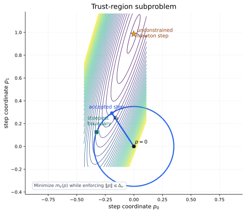
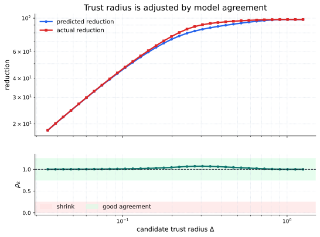
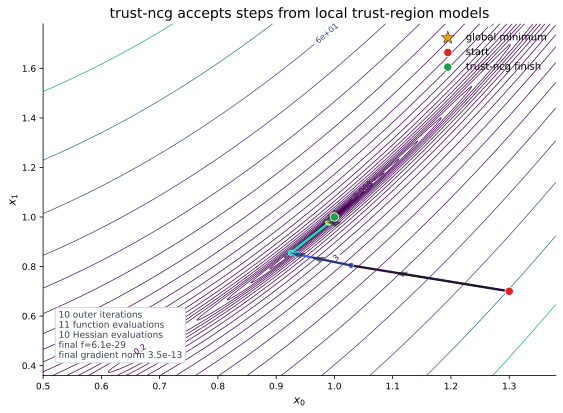

From Line Search To Trust Regions
Newton-CG builds a local quadratic model at the current point \(x_k\), approximately solves the Newton equation, and then uses a line search to decide how much of that direction to take. That works well when the direction is reliable and the line search can find a safe step along it.
The fragile part is the order of decisions. A line-search method first commits to a direction \(p_k\), then asks for a scalar \(\alpha_k\) along that one ray. If the quadratic model is poor or the Hessian is indefinite, the chosen ray may be the wrong thing to trust.
A trust-region method reverses the question. It first chooses a maximum step size \(\Delta_k\), then asks: among all steps inside that ball, which one minimizes the quadratic model best? The step \(p\) is still a movement away from \(x_k\), \(g_k=\nabla f(x_k)\) is the current gradient, and \(H_k=\nabla^2 f(x_k)\) is the current Hessian or Hessian-vector product operator:
The scalar \(\Delta_k\) is the trust radius. It is not a learning rate and it is not the same thing as a line-search \(\alpha_k\). \(\alpha_k\) scales one already chosen direction. \(\Delta_k\) limits the whole set of candidate steps before the direction is chosen.
Trust Radius And Agreement
Once the subproblem proposes a step \(p_k\), the algorithm must check whether the model deserved that trust. It compares two reductions.
The actual reduction is what happened to the real objective:
The predicted reduction is what the quadratic model claimed would happen:
The agreement ratio \(\rho_k\) divides those two quantities:
This scalar has one job: measure whether the local quadratic model predicted the real objective. If \(\rho_k\approx 1\), the model's predicted drop was close to the real drop. If \(\rho_k\leq 0\), the trial step failed to reduce the real objective even though the model expected improvement.
The tempting shortcut is to make \(\Delta_k\) tiny so every model looks locally safe. That almost works, but it can make the method crawl. trust-ncg adapts instead: shrink the radius when \(\rho_k\) is poor, accept useful steps when \(\rho_k\) is good enough, and expand the radius only when the model was accurate and the proposed step actually reached the boundary.


Truncated CG Subproblem Solve
The trust-region subproblem is still a Newton-style quadratic problem. If there were no radius constraint and \(H_k\) were positive definite, its minimizer would solve the usual Newton equation:
trust-ncg uses conjugate gradients to search for that model minimizer without factoring the Hessian. It can use a dense Hessian, but its large-problem appeal is the same as Newton-CG: the inner iteration only needs products \(H_kv\).
What Gets Truncated?
Ordinary CG would keep improving the quadratic solve until the residual was small enough. trust-ncg adds a guardrail: every inner step must remain inside \(\|p\|\leq\Delta_k\). The inner solve stops early in three common cases.
- The residual becomes small. Then the quadratic model has been solved well enough inside the trust region.
- The next CG step would cross the boundary. Then the method takes the boundary point along that CG direction.
- CG detects non-positive curvature. Then the quadratic model is not a proper bowl along the current direction, so the best safe move is again on the boundary.
Boundary Stops Are Not Failures
Suppose the current inner CG estimate is \(p_j\) and the next CG direction is \(d_j\). If the full move \(p_j+\eta_jd_j\) would leave the trust ball, trust-ncg chooses the scalar \(\tau\) that lands exactly on the boundary:
The scalar \(\tau\) is just the remaining distance allowed in that direction. It is the trust-region version of "go as far as the model is currently allowed to be trusted."
Negative Curvature Changes The Question
CG also watches the curvature number \(d_j^\mathsf{T}H_kd_j\). When this number is positive, the quadratic model curves upward along \(d_j\), so a finite line minimizer makes sense. When it is zero or negative, the model is flat or bends downward along that direction:
The tempting shortcut is to keep running CG anyway. But along negative curvature, the local model would prefer to keep moving until the radius stops it. That is exactly why a trust region helps: it lets the method exploit a useful negative-curvature direction without letting the quadratic model run away.
Meaning: truncated CG is not a weaker Newton-CG by accident. It is CG modified to respect the radius and to handle curvature that is not positive definite.
Watch It On Rosenbrock
On Rosenbrock, trust-ncg uses the same objective, gradient, and Hessian-vector product structure introduced on the Newton-CG page. The difference is step control. Newton-CG says \(x_{k+1}=x_k+\alpha_kp_k\) after a line search. trust-ncg says \(x_{k+1}=x_k+p_k\) only after the trust-region step passes the agreement test.


Use trust-ncg In SciPy
In SciPy, use method="trust-ncg". Provide
jac and either a full Hessian through hess
or a Hessian-vector product through hessp. The
hessp version is the natural bridge from Newton-CG:
both methods can apply curvature without storing the dense Hessian.
import numpy as np
from scipy.optimize import minimize
def rosen(x):
return np.sum(100.0 * (x[1:] - x[:-1]**2.0)**2.0 + (1 - x[:-1])**2.0)
def rosen_der(x):
der = np.zeros_like(x)
der[1:-1] = (
200 * (x[1:-1] - x[:-2]**2)
- 400 * x[1:-1] * (x[2:] - x[1:-1]**2)
- 2 * (1 - x[1:-1])
)
der[0] = -400 * x[0] * (x[1] - x[0]**2) - 2 * (1 - x[0])
der[-1] = 200 * (x[-1] - x[-2]**2)
return der
def rosen_hess_p(x, p):
hp = np.zeros_like(x)
hp[0] = (1200 * x[0]**2 - 400 * x[1] + 2) * p[0] - 400 * x[0] * p[1]
hp[1:-1] = (
-400 * x[:-2] * p[:-2]
+ (202 + 1200 * x[1:-1]**2 - 400 * x[2:]) * p[1:-1]
- 400 * x[1:-1] * p[2:]
)
hp[-1] = -400 * x[-2] * p[-2] + 200 * p[-1]
return hp
x0 = np.array([1.3, 0.7, 0.8, 1.9, 1.2])
result = minimize(
rosen,
x0,
method="trust-ncg",
jac=rosen_der,
hessp=rosen_hess_p,
options={"gtol": 1e-8, "disp": True},
)
print(result.x)
print(result.fun)
print(result.success, result.message)
The key contract is the same as Newton-CG:
rosen_hess_p(x, p) returns \(H(x)p\), not the matrix
\(H(x)\). trust-ncg then uses those products inside its truncated CG
trust-region solve.
When To Use It
| Use trust-ncg when | Prefer another method when |
|---|---|
| You have gradients and Hessian-vector products for a smooth unconstrained problem. | You only have function values; derivative-free methods are a better starting point. |
| Newton-CG line-search steps are unstable or too sensitive to the full Newton direction. | The line search is already reliable and each Hessian-vector product is expensive; Newton-CG may be cheaper. |
| The Hessian can be indefinite, and you want the radius to control negative-curvature steps. | You want a more accurate trust-region subproblem solve; trust-krylov is the next candidate. |
| The problem is large and second-order information can be applied as products. | The problem is medium-sized with a cheap dense Hessian; trust-exact can take fewer outer iterations. |